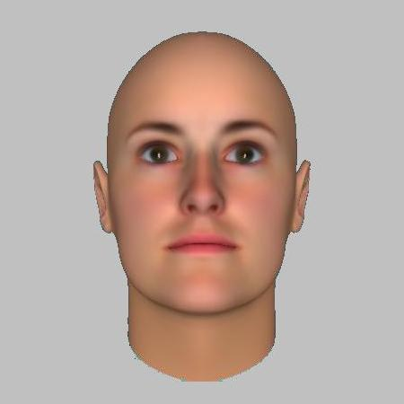
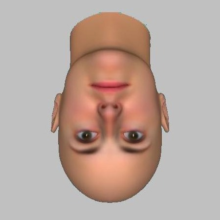
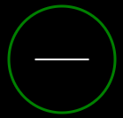

<!DOCTYPE html>
<html lang="en" style="background: #c0c0c0;height: 100%;">

<head>
    <meta name="viewport" content="width=device-width, initial-scale=1" charset="utf-8" />
    <title>Experiment</title>
    <script src="jspsych.js" type="text/javascript"></script>
    <script src="plugins/jspsych-brms.js" type="text/javascript"></script>
    <script src="plugins/jspsych-survey-likert.js" type="text/javascript"></script>
    <script src="plugins/jspsych-survey-multi-choice.js" type="text/javascript"></script>
    <script src="plugins/jspsych-survey-multi-select.js" type="text/javascript"></script>
    <script src="plugins/jspsych-survey-text.js" type="text/javascript"></script>
    <script src="plugins/jspsych-instructions.js" type="text/javascript"></script>
    <script src="plugins/jspsych-inattentional-blindness.js" type="text/javascript"></script>
    <script src="plugins/jspsych-attentional_capture.js" type="text/javascript"></script>
    <script src="plugins/jspsych-html-keyboard-response.js" type="text/javascript"></script>
    <script src="plugins/jspsych-survey-multi-choice.js" type="text/javascript"></script>
    <script src="plugins/jspsych-virtual-chinrest.js" type="text/javascript"></script>
    <script src="plugins/jspsych-fullscreen.js" type="text/javascript"></script>

    <script type="text/javascript" src="lib/vendors/jquery-2.2.0.min.js"></script>
    <script type="text/javascript" src="lib/jspsych-pavlovia-3.0.0.js"></script>

    <link rel="stylesheet" href="css/jspsych.css" type="text/css">

    <!-- virtual-chinrest dependency -->
    <script src="plugins/jspsych-html-button-response.js"></script>
    <script src="https://cdnjs.cloudflare.com/ajax/libs/svg.js/2.6.3/svg.min.js"></script>

    <script id="functions">
        // Shuffle list function
        function shuffle(array) {
            let currentIndex = array.length,
                randomIndex;

            // While there remain elements to shuffle...
            while (currentIndex != 0) {
                // Pick a remaining element...
                let randomIndex = Math.floor(Math.random() * currentIndex);
                currentIndex--;
                // And swap it with the current element.
                [array[currentIndex], array[randomIndex]] = [
                    array[randomIndex], array[currentIndex]
                ];
            }

            return array;
        }

        // Downlowd file function
        function download(filename, text) {
            let element = document.createElement('a');
            element.setAttribute('href', 'data:text/plain;charset=utf-8,' + encodeURIComponent(text));
            element.setAttribute('download', filename);

            element.style.display = 'none';
            document.body.appendChild(element);

            element.click();

            document.body.removeChild(element);
        }

        // Create survey trials add 3 quesions in each trial 
        function getSurveyTrials(survey_type, survey_name, questions, survey_direction, labels) {
            let survey_trials = [];
            for (let i = 0; i < questions.length; i += 3) {
                survey_trials.push({
                    questions: [{
                        labels: labels,
                        prompt: questions[i],
                        required: true
                    }, {
                        labels: labels,
                        prompt: questions[i + 1],
                        required: true
                    }, {
                        labels: labels,
                        prompt: questions[i + 2],
                        required: true
                    }],
                    type: survey_type,
                    direction: survey_direction,
                    name: survey_name + "_" + i
                });
            }
            return survey_trials;
        }

        // Change background color trial
        function getChangeBackgroundColorTrial(color) {
            return {
                type: "html-keyboard-response",
                stimulus: "",
                choices: "NO_KEYS",
                trial_duration: 10,
                on_start: function () {
                    document.getElementsByTagName('body')[0].style.backgroundColor = color;
                    document.body.style.cursor = "pointer";
                }
            };
        }
    </script>

    <script id="rms">
        // Create RMS WHERE trials
        function createWhereRmsTrials(images, choices, block, feedback = false) {
            rms_trials = []
            // For each image create RMS trial
            shuffle(images).forEach(element => {
                rms_trials.push({
                    type: "rms",
                    stimulus: element,
                    choices: choices,
                    response_ends_trial: true,
                    post_trial_gap: 400,
                    stimulus_opacity: 0.3,
                    stimulus_block: block,
                    on_finish: function (data) {
                        data.block = block;
                        data.cond = "where"
                        if (feedback) {
                            let image = document.createElement('img');
                            image.style.width = "100px";
                            image.style.height = "100px";
                            // append image to body
                            document.body.appendChild(image);
                            // Set image in the middle of the screen
                            image.style.position = "absolute";
                            image.style.top = "50%";
                            image.style.left = "50%";
                            image.style.transform = "translate(-50%, -50%)";
                            if (data.correct == 1) {
                                image.src = "images/validations/correct.png";
                            } else {
                                image.src = "images/validations/incorrect.png";
                            }
                            setTimeout(() => {
                                document.body.removeChild(image);
                            }, 350);
                        }
                    }
                });
            });

            return rms_trials;
        }

        // Create RMS WHAT trials
        function createWhatRmsTrials(images, choices, block, correct_responses, feedback = false) {
            rms_trials = []
            // For each image create RMS trial
            shuffle(images).forEach(element => {
                rms_trials.push({
                    type: "rms",
                    stimulus: element,
                    choices: choices,
                    response_ends_trial: true,
                    post_trial_gap: 400,
                    stimulus_opacity: 0.3,
                    correct_responses: correct_responses,
                    on_finish: function (data) {
                        data.block = block;
                        data.cond = "what";
                        if (feedback) {
                            let image = document.createElement('img');
                            image.style.width = "100px";
                            image.style.height = "100px";
                            // append image to body
                            document.body.appendChild(image);
                            // Set image in the middle of the screen
                            image.style.position = "absolute";
                            image.style.top = "50%";
                            image.style.left = "50%";
                            image.style.transform = "translate(-50%, -50%)";
                            if (data.correct == 1) {
                                image.src = "images/validations/correct.png";
                            } else {
                                image.src = "images/validations/incorrect.png";
                            }
                            setTimeout(() => {
                                document.body.removeChild(image);
                            }, 350);
                        }
                    }
                });
            });

            return rms_trials;
        }

        // Create RMS general instructions
        const rms_general_instructions = {
            pages: [
                `Thank you for completing the previous tasks. We will now move on to the next task.<br>`,
                `The goal of this task is to understand information processing under visual noise. This task will last 7-10 minutes.<br>
                On every round, you will see flashes of colorful squares on the screen, with a '+' sign in the middle of it.<br>
                Please sit directly in front of the screen (between 30 and 70 centimeters away) and look directly at the '+' sign.<br>
                After some time, you will see a face, or a part of a face, appearing behind the colorful squares.`
            ],
            show_clickable_nav: true,
            type: "instructions",
            direction: "ltr",
            name: "rms_general_instructions"
        };

        // Create RMS WHERE trials instructions
        const rms_where_instructions = {
            pages: [
                `In this part of the task, you will need to identify the position of the face in relation to the central '+' sign. Please respond as swiftly as you can.<br>
                When you observe a face, or part of it, through the squares, press 'P' if it is to the right of the '+' sign, and 'Q' if it is to the left.`,
                `We will begin with a short training session to ensure you are comfortable with the process. Press 'Next' to start the training.<br>
                Keep your focus on the '+' sign at all times during the study. Remember: 'P' = Right, 'Q' = Left.`
            ],
            show_clickable_nav: true,
            type: "instructions",
            direction: "ltr",
            name: "rms_where_instructions"
        };

        // Create RMS WHAT trials instructions
        const rms_what_instructions = {
            pages: [
                `In this section, your task is to determine the orientation of the face displayed on the screen. Please respond as quickly as possible.<br>
                When a face is presented upright, press 'Y'. If the face is inverted, press 'B'.`,
                `For example, for this target: , you should press 'Y', because the face is upright.<br>
                And in this target: , you should press 'B', because the face is inverted.`,
                `Next, we will proceed with a brief training session to familiarize you with the task. Press 'Next' to begin<br>
                Throughout the exercise, please keep your gaze fixed on the '+' sign. Remember: 'Y' = Upright, 'B' = Inverted.`
            ],
            show_clickable_nav: true,
            type: "instructions",
            direction: "ltr",
            name: "rms_where_instructions"
        };

        // Create RMS WHERE main trials instuctions
        const rms_where_main_instructions = {
            pages: [
                `The training session is complete. Press 'Next' to commence the actual task.<br>
                Keep your eyes on the '+' sign throughout the study. <b>'P' = Right</b>, <b>'Q' = Left</b>.`
            ],
            show_clickable_nav: true,
            type: "instructions",
            direction: "ltr",
            name: "rms_where_main_instructions"
        };

        // Create RMS WHAT main trials instuctions
        const rms_what_main_instructions = {
            pages: [
                `Training is now finished. Press 'Next' to begin the main task.<br>
                Maintain your focus on the '+' sign during the study. <b>'Y' = Upright</b>, <b>'B' = Inverted</b>.`,
            ],
            show_clickable_nav: true,
            type: "instructions",
            direction: "ltr",
            name: "rms_what_main_instructions"
        };

        //All Practice stimulus
        const practice_images = [
            "images/rms/f42887_e_001.jpg", "images/rms/f42887_e_001.jpg", "images/rms/f42887_e_001.jpg",
            "images/rms/f42887_e_001.jpg", "images/rms/f42887_e_001.jpg", "images/rms/f42887_e_001.jpg"
        ];

        // All Practice reverted stimulus 
        const practice_images_revert = [
            "images/rms/f42887_e_001_1.jpg", "images/rms/f42887_e_001_1.jpg", "images/rms/f42887_e_001_1.jpg",
            "images/rms/f42887_e_001_1.jpg", "images/rms/f42887_e_001_1.jpg", "images/rms/f42887_e_001_1.jpg"
        ]

        // All main task stimulus, not reverted
        const main_images = [
            "images/rms/f42887_e_001.jpg", "images/rms/f42887_e_005.jpg", "images/rms/f42887_e_015.jpg",
            "images/rms/f42887_e_025.jpg", "images/rms/f42887_e_028.jpg", "images/rms/f42887_e_053.jpg",
            "images/rms/f42887_e_058.jpg", "images/rms/f42887_e_064.jpg", "images/rms/f42887_e_072.jpg",
            "images/rms/f42887_e_080.jpg", "images/rms/f42887_e_098.jpg", "images/rms/f42887_e_103.jpg",
            "images/rms/f42887_e_121.jpg", "images/rms/f42887_e_127.jpg", "images/rms/f42887_e_140.jpg",
            "images/rms/f42887_e_156.jpg", "images/rms/f42887_e_161.jpg", "images/rms/f42887_e_180.jpg",
            "images/rms/f42887_e_202.jpg", "images/rms/f42887_e_241.jpg", "images/rms/f42887_e_245.jpg"
        ];

        // All main task stimulus, reverted
        const reverted_main_images = [
            "images/rms/f42887_e_001_1.jpg", "images/rms/f42887_e_005_1.jpg", "images/rms/f42887_e_015_1.jpg",
            "images/rms/f42887_e_025_1.jpg", "images/rms/f42887_e_028_1.jpg", "images/rms/f42887_e_053_1.jpg",
            "images/rms/f42887_e_058_1.jpg", "images/rms/f42887_e_064_1.jpg", "images/rms/f42887_e_072_1.jpg",
            "images/rms/f42887_e_080_1.jpg", "images/rms/f42887_e_098_1.jpg", "images/rms/f42887_e_103_1.jpg",
            "images/rms/f42887_e_121_1.jpg", "images/rms/f42887_e_127_1.jpg", "images/rms/f42887_e_140_1.jpg",
            "images/rms/f42887_e_156_1.jpg", "images/rms/f42887_e_161_1.jpg", "images/rms/f42887_e_180_1.jpg",
            "images/rms/f42887_e_202_1.jpg", "images/rms/f42887_e_241_1.jpg", "images/rms/f42887_e_245_1.jpg"
        ];

        // Choices for RMS trials (q for left and p for right)
        const where_choices = ["q", "p", "P", "Q"];

        // Choices for RMS trials (y for upright and b for reverted)
        const what_choices = ["y", "b", "Y", "B"];

        // Get all RMS WHERE block trials
        function getWhereRmsBlock() {
            // Create RMS timeline
            let rms_trials = [];

            // Add Rms instructions
            rms_trials.push(rms_general_instructions);
            // Add Rms instructions
            rms_trials.push(rms_where_instructions);

            // Create all RMS practice trials
            const rms_training_trials = createWhereRmsTrials(practice_images, where_choices, "training", true);
            const rms_training_trials_revert = createWhereRmsTrials(practice_images_revert, where_choices, "training", true);

            // Add all practice trials to RMS timeline in random order (using shuffle function)
            shuffle([...rms_training_trials, ...rms_training_trials_revert]).forEach(function (trial) {
                rms_trials.push(trial);
            });

            // Add RMS instuctions (for main trials)
            rms_trials.push(rms_where_main_instructions);

            // Create all RMS main trials (reverted and not reverted together)
            let main_rms_trials = [
                ...createWhereRmsTrials(main_images, where_choices, "main"),
                ...createWhereRmsTrials(reverted_main_images, where_choices, "reversed")
            ];

            shuffle(main_rms_trials).forEach(function (trial) {
                rms_trials.push(trial);
            });

            return rms_trials;
        }

        // Get all RMS WHAT block trials
        function getWhatRmsBlock() {
            // Create RMS timeline
            let rms_trials = [];

            // Add Rms instructions
            rms_trials.push(rms_what_instructions);

            // Create all RMS practice trials
            const rms_training_trials = createWhatRmsTrials(practice_images, what_choices, "training", ['y'], true);
            const rms_training_trials_revert = createWhatRmsTrials(practice_images_revert, what_choices, "training_revert", ['b'], true);

            // Add all practice trials to RMS timeline in random order (using shuffle function)
            shuffle([...rms_training_trials, ...rms_training_trials_revert]).forEach(function (trial) {
                rms_trials.push(trial);
            });

            // Add RMS instuctions (for main trials)
            rms_trials.push(rms_what_main_instructions);

            const main_correct_responses = ["y", "Y"]
            const revert_correct_responses = ["b", "B"]

            // Create all RMS main trials (reverted and not reverted together)
            let main_rms_trials = [
                ...createWhatRmsTrials(main_images, what_choices, "main", main_correct_responses),
                ...createWhatRmsTrials(reverted_main_images, what_choices, "reversed", revert_correct_responses)
            ]

            shuffle(main_rms_trials).forEach(function (trial) {
                rms_trials.push(trial);
            });

            return rms_trials;
        }
    </script>

    <script id="attentional-capture">
        const ac_training_instructions = {
            pages: [
                `In this task, you will encounter various shapes, each with a line inside. Focus on identifying the orientation of the line within the <b>circle</b>.<br>
                Press 'D' if the line inside the circle is horizontal. Press 'K' if it is vertical.`,
                `For example, in this target: , you should press 'D' because the line is horizontal. <br>
                And in this target: , you should press 'K' because the line is vertical.`,
                `You will start with a practice session to get accustomed to the task. This will help you prepare for the actual task that follows.`
            ],
            show_clickable_nav: true,
            type: "instructions",
            direction: "ltr",
            name: "attentional_capture_training_instructions",
            on_finish: function () {
                document.getElementsByTagName('body')[0].style.backgroundColor = 'black';
            }
        };

        const ac_instructions = {
            pages: [
                `The practice session is now complete. Press 'Next' to start the main task.<br>
                Remember, press 'D' for a horizontal line within the circle, and 'K' for a vertical line.`
            ],
            show_clickable_nav: true,
            type: "instructions",
            direction: "ltr",
            name: "attentional_capture_instructions",
            on_finish: function () {
                document.getElementsByTagName('body')[0].style.backgroundColor = 'black';
            }
        };

        function getBreakTrial() {
            return {
                type: "html-keyboard-response",
                stimulus: "Break time! Please take a short break. The experiment will continue shortly",
                choices: "NO_KEYS",
                trial_duration: 60 * 100, // 60 seconds
            }
        }

        // Create attentional capture trial
        function getSingleAcTrial(singelton_exist, color, distractor_color, distractors_shapes, is_complex, feedback = false) {
            return {
                type: 'attentional-capture',
                target_shape: "circle",
                post_trial_gap: 400,
                color: color,
                distractor_exist: singelton_exist,
                distractor_shapes: distractors_shapes,
                distractor_color: distractor_color,
                set_size: 8,
                on_finish: function (data) {
                    data.color = color;
                    data.distractor_color = distractor_color;
                    data.singelton_exist = singelton_exist;
                    data.is_complex = is_complex;
                    if (feedback) {
                        let image = document.createElement('img');
                        image.style.width = "100px";
                        image.style.height = "100px";
                        document.body.appendChild(image);
                        image.style.position = "absolute";
                        image.style.top = "50%";
                        image.style.left = "50%";
                        image.style.transform = "translate(-50%, -50%)";
                        if (data.correct == 1) {
                            image.src = "images/validations/correct.png";
                        } else {
                            image.src = "images/validations/incorrect.png";
                        }
                        setTimeout(() => {
                            document.body.removeChild(image);
                        }, 350);
                    }
                }
            };
        }

        function getDistractorColor(color) {
            if (color == "red") {
                return "green";
            } else {
                return "red";
            }
        }

        function getAcBlock() {
            const training_count = 12
            const main_with_distractor_count = 148;
            const main_without_distractor_count = 140;
            const distractors_shapes_list = ["diamond", "square", "hexagon"];
            const main_count = main_with_distractor_count + main_without_distractor_count;

            let colors = []

            for (let i = 0; i < training_count + main_count; i++) {
                if (i % 2 == 0) {
                    colors.push("red");
                } else {
                    colors.push("green");
                }
            }

            colors = shuffle(colors);

            let training_trials = [];

            for (let i = 0; i < training_count / 2; i++) {
                training_trials.push(getSingleAcTrial(false, colors[i], getDistractorColor(colors[i]), distractors_shapes_list, false, true));
            }
            for (let i = training_count / 2; i < training_count; i++) {
                training_trials.push(getSingleAcTrial(false, colors[i], getDistractorColor(colors[i]), [shuffle(distractors_shapes_list)[0]], true, true));
            }

            training_trials = shuffle(training_trials);

            let main_trials = [];

            for (let i = training_count; i < main_with_distractor_count + training_count; i++) {
                if (i % 2 == 0) {
                    main_trials.push(getSingleAcTrial(true, colors[i], getDistractorColor(colors[i]), distractors_shapes_list, true));
                } else {
                    main_trials.push(getSingleAcTrial(true, colors[i], getDistractorColor(colors[i]), [shuffle(distractors_shapes_list)[0]], false));
                }
            }

            for (let i = main_with_distractor_count + training_count; i < training_count + main_count; i++) {
                if (i % 2 == 0) {
                    main_trials.push(getSingleAcTrial(false, colors[i], getDistractorColor(colors[i]), distractors_shapes_list, true));
                } else {
                    main_trials.push(getSingleAcTrial(false, colors[i], getDistractorColor(colors[i]), [shuffle(distractors_shapes_list)[0]], false));
                }
            }

            main_trials = shuffle(main_trials);

            let main_trials_with_breaks = []

            for (let i = 0; i < main_trials.length; i++) {
                main_trials_with_breaks.push(main_trials[i]);
                if (i % 75 == 0 && i != 0) {
                    main_trials_with_breaks.push(getChangeBackgroundColorTrial("#c0c0c0"));
                    main_trials_with_breaks.push(getBreakTrial());
                    main_trials_with_breaks.push(getChangeBackgroundColorTrial("black"));
                }
            }

            return [
                ac_training_instructions,
                getChangeBackgroundColorTrial("black"),
                ...shuffle(training_trials),
                getChangeBackgroundColorTrial("#c0c0c0"),
                ac_instructions,
                getChangeBackgroundColorTrial("black"),
                ...main_trials_with_breaks,
                getChangeBackgroundColorTrial("#c0c0c0")
            ]
        }
    </script>

    <script id="inattentional-blindness">
        const ib_start_instructions = {
            pages: [
                `Thank you for completing the previous task. We will now move on to the next task.<br>`,
                `In this task, you will be presented with 4 Black letters and 4 White letters,<br>
                as well as a blue line with a square in the center.<br>
                The letters will move about the display at various speeds.`,
                `Your task will be to count the number of times the White letters <u><b>completely cross</b></u> the blue line.<br>
                Please keep your eyes on the blue square while you complete this task.`,
                `In order for this task to run at the highest quality possible,<br>
                it is very important that you close any other open browser tabs or windows.<br>
                Please do this now before you start the task.<br>
                Press the next to begin.`
            ],
            show_clickable_nav: true,
            type: "instructions",
            direction: "ltr",
            name: "ib_start_instructions"
        };

        const ib_trial_instructions = {
            pages: [
                `Please count the number of times the White letters <u><b>completely cross</b></u> the blue line.<br>
                Do not include the line crossings you counted in the prevous trial in your count for this trial.<br>
                Remember to keep your eyes on the blue square while you complete this task.<br>
                Press the next to begin.`
            ],
            show_clickable_nav: true,
            type: "instructions",
            direction: "ltr",
            name: "ib_instructions"
        }

        const ib_question = {
            type: "survey-text",
            name: "ib_question",
            questions: [
                {
                    prompt: "How many times did the White letters <u><b>completely cross</b></u> the blue line?",
                    name: "count_question"
                }
            ]
        };

        function getIbBlock(target_position) {
            let inattentional_blindness_trials = [];

            inattentional_blindness_trials.push(ib_start_instructions);

            for (let i = 0; i < 4; i++) {
                inattentional_blindness_trials.push(ib_trial_instructions);
                inattentional_blindness_trials.push({
                    type: "inattentional-blindness",
                    show_target: false,
                    distractors_count: 8,
                    trial_duration: 15000
                });
                name = "ib_trial_" + i;
                inattentional_blindness_trials.push(ib_question)
            }

            target_trial = {
                type: "inattentional-blindness",
                show_target: true,
                target_position: target_position,
                distractors_count: 8,
                trial_duration: 15000,
                name: "ib_target_trial"
            };

            inattentional_blindness_trials.push(ib_trial_instructions);
            inattentional_blindness_trials.push(target_trial);

            const ib_end_survey = {
                type: "survey-multi-choice",
                questions: [
                    {
                        prompt: "On that last trial of the task, did you notice anything that was not there on previous trials?",
                        options: ["Yes", "No"],
                        required: true,
                        name: "ib_notice"
                    }
                ]
            }

            const ib_end_instructions = {
                pages: [
                    "Please answer the following questions even if you responded with 'No' for the previous question."
                ],
                show_clickable_nav: true,
                type: "instructions",
                direction: "ltr",
                name: "ib_end_instructions"
            }

            const ib_end_survey_2 = {
                type: "survey-multi-choice",
                questions: [
                    {
                        prompt: "If you did notice something else on that last trial, was it moving? (If you are unsure or did not notice, please just guess)",
                        options: ["Yes", "No"],
                        required: true,
                        name: "ib_notice_moving"
                    },
                    {
                        prompt: "If it was moving, what direction was it moving in? (If you are unsure or did not notice, please just guess)",
                        options: ["Right", "Left", "Up", "Down"],
                        required: true,
                        name: "ib_notice_direction"
                    }
                ]
            }

            const ib_end_survey_3 = {
                type: "survey-multi-choice",
                questions: [
                    {
                        prompt: "If you did notice something else on that last trial, what color was it? (If you are unsure or did not notice, please just guess)",
                        options: ["Red", "Green", "Blue", "Yellow", "Gray", "Black", "White", "Brown", "Purple"],
                        required: true,
                        name: "ib_notice_color"
                    }
                ]
            }

            const ib_end_survey_4 = {
                type: "survey-multi-choice",
                questions: [
                    {
                        prompt: " If you did notice something else on that last trial, what shape was it? (If you are unsure or did not notice, please just guess)",
                        options: ["Rectangle", "Circle", "Triangle", "Cross", "T-shape", "L-shape", "V-shape", "B-shape"],
                        required: true,
                        name: "ib_notice_shape"
                    }
                ]
            }

            inattentional_blindness_trials.push(ib_end_survey);
            inattentional_blindness_trials.push(ib_end_instructions);
            inattentional_blindness_trials.push(ib_end_survey_2);
            inattentional_blindness_trials.push(ib_end_survey_3);
            inattentional_blindness_trials.push(ib_end_survey_4);

            return inattentional_blindness_trials;
        }
    </script>

    <script id="pavlovia">
        // Pavlovia init and finish trials
        const pavlovia_init = {
            type: "pavlovia",
            command: "init"
        };

        const pavlovia_finish = {
            type: "pavlovia",
            command: "finish"
        };
    </script>

    <script id="general">
        const fullscreen_trial = {
            type: "fullscreen",
            fullscreen_mode: true
        };

        // const start = [{
        const start = [pavlovia_init, fullscreen_trial, {
            pages: [
                `You are invited to participate in a web-based research of human cognition. It will take approximately 20 minutes to complete.<br><br>
                <b>PARTICIPATION</b><br>
                Your participation in this survey is voluntary. You may refuse to take part in the research or exit the survey at any time.<br><br>
                <b>BENEFITS</b><br>
                You will be compensated 4.5 GBP for participation in this study.<br>
                Although this study will not benefit you personally, we hope that our results will add to the knowledge about human experiences.`,
                `<b>RISKS</b><br>
                There are no foreseeable risks involved in participating in this study other than those encountered in standard use of the device you use to access the survey (computer, smartphone, etc.).<br>
                Your participation in this study will not include psychological counseling. In the event you seek such services, please contact the center below:<br>
                National Hopeline Network 1-800-784-2433<br><br>
                <b>CONFIDENTIALITY</b><br>
                All of your responses will be held in confidence. Only the researchers involved in this study and those responsible for research oversight will have access to the information you provide.<br>
                The researcher will not know your name, and no identifying information will be connected to your survey answers in any way. The survey is therefore anonymous.`,
                `<b>CONTACT</b><br>
                If you have questions at any time about the study or the procedures, you may contact the researcher, Nadav Weisler via email at nadav.weisler1@mai.huji.ac.il<br><br>
                <b>ELECTRONIC CONSENT:</b><br>
                Please note - clicking on the “Next >” button indicates that:<br>
                •You have read the above information<br>
                • You voluntarily agree to participate in both parts of the experiment<br>
                • You are 18 years of age or older<br>
                If you do not want to participate please close the window. Your data will not be used either way.`,
                `We are about to begin. Please continue.`
            ],
            show_clickable_nav: true,
            type: "instructions",
            direction: "ltr",
            name: "gen_instructions"
        }, {
                questions: [{
                    rows: 1.0,
                    columns: 25.0,
                    value: "",
                    prompt: "Please enter your Prolific ID.<br>Note, that if you don't include your Prolific ID, we may not be able to compensate you:",
                    required: true
                }],
                type: "survey-text",
                direction: "ltr",
                name: "id"
            }];

        const visual_chine_rest = [{
            type: 'virtual-chinrest',
            blindspot_reps: 3,
            resize_units: "none",
            item_path: "images/card.png",
            viewing_distance_report: "none",
            pixels_per_unit: 50
        }];

        const demo = [{
            pages: [
                "Thank you for your answers. Please answer a few more demographic questions.<br>No identifying personal information will be collected."
            ],
            show_clickable_nav: true,
            type: "instructions",
            direction: "ltr",
            name: "demo_instructions"
        }, {
            questions: [{
                options: ["Male", "Female", "Other"],
                prompt: "What gender do you identify as?",
                required: true
            }],
            type: "survey-multi-choice",
            button_label_next: "Continue",
            direction: "ltr",
            name: "gender"
        }, {
            questions: [{
                rows: 1.0,
                columns: 2.0,
                value: "",
                prompt: "What is your age?",
                required: true
            }],
            type: "survey-text",
            button_label_next: "Continue",
            direction: "ltr",
            name: "age_q"
        }, {
            questions: [{
                options: ["Yes", "No"],
                prompt: "Have you ever been diagnosed with ADD?",
                required: true
            }, {
                options: ["Yes", "No"],
                prompt: "Have you ever been diagnosed with ADHD?",
                required: true
            }],
            type: "survey-multi-choice",
            button_label_next: "Continue",
            direction: "ltr",
            name: "adhd_q"
        }, {
            questions: [{
                options: ["High school", "Bachelor's Degree", "Master's Degree", "Ph.D.", "Trade school", "Prefer not to answer"],
                prompt: "What is the highest degree or level of education you have completed?",
                required: true
            }],
            type: "survey-multi-choice",
            button_label_next: "Continue",
            direction: "ltr",
            name: "education"
        }, pavlovia_finish];
        // }];

        // Create end experimnt trials
        const end = [{
            pages: [
                `Thank you for participating! In order for your participation to be submitted and for you to be paid, please copy the code in the following page and paste it in the Prolific's HIT page.<br>
                Your Prolific compensation code:<br>
                <b>CGKECCEX</b><br><br>
                Please, proceed to the next page to complete the survey.`
            ],
            show_clickable_nav: true,
            type: "instructions",
            direction: "ltr",
            button_label_next: "Continue",
            name: "end_instructions",
        }];

    </script>

    <script id="run">
        const rms_where_trials = getWhereRmsBlock();
        const rms_what_trials = getWhatRmsBlock();
        const ac_trials = getAcBlock();
        const ib_trials = getIbBlock("pfar");

        let experiment_timeline = [
            ...start,
            ...visual_chine_rest,
            ...ac_trials,
            ...ib_trials,
            ...rms_where_trials,
            ...rms_what_trials,
            ...demo,
            ...end
        ]

        const queryString = window.location.href;
        const url = new URL(queryString);
        const prolific_id = url.searchParams.get('PROLIFIC_PID');
        const study_id = url.searchParams.get('STUDY_ID');
        const session_id = url.searchParams.get('SESSION_ID');

        jsPsych.data.addProperties({
            ProlificID: prolific_id,
            ProlificStudyID: study_id,
            ProlificSessionID: session_id
        });

        jsPsych.init({
            timeline: experiment_timeline,
            fullscreen: true,
            on_finish: function () {
                console.log("Finished");
            }
        });


    </script>
</head>

</html>